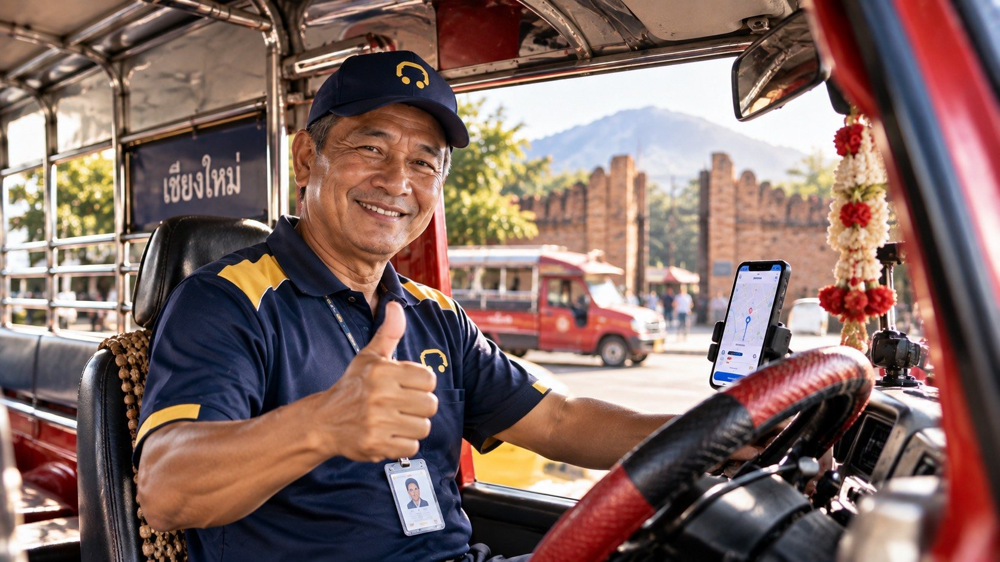
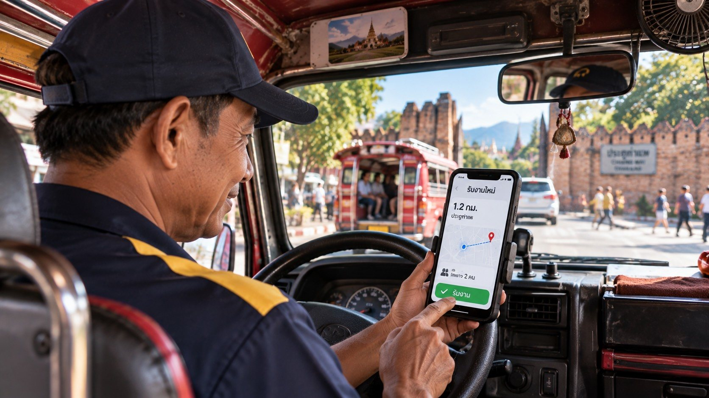

Больше заказов — без ухода из вашего кооператива
voyiro принимает только легальных водителей общественного транспорта, заявка подаётся через ваш кооператив. Мы не выпускаем частные машины конкурировать с вами.
Создано специально для водителей общественного транспорта Таиланда
Заказы от отелей и турфирм
Пассажиры из отелей, турфирм и ресторанов-партнёров, до которых обычно не добраться
Низкая комиссия, выплаты каждую неделю
Комиссия от 12% и снижается до 9% по уровню. Перевод на счёт каждый четверг
Кооператив рядом
Ваш кооператив одобряет участников и заботится о них — если возникнет проблема, вы говорите с людьми, которые вас знают
Просто через LINE
Принимайте заказы в привычном LINE, без сложного обучения
Проверенные пассажиры
Точка посадки, место назначения и цена известны до принятия заказа — без торга и споров о цене
Страховка и льготы
[Ожидается: ประกันอุบัติเหตุคนขับ สวัสดิการ หรือสิทธิประโยชน์ที่คนขับได้รับ]
Кто может подать заявку
- Член транспортного кооператива, сотрудничающего с voyiro
- Действующая лицензия водителя общественного транспорта или удостоверение водителя для своего типа транспорта
- Машина зарегистрирована по своему типу, обязательная страховка и налог оплачены
- Пройдена проверка биографии [Ожидается: วิธีตรวจประวัติอาชญากรรม และหน่วยงานที่ตรวจ]
- Смартфон с LINE, а для автомобилей — Android [Ожидается: เวอร์ชันขั้นต่ำ / รองรับ iPhone หรือไม่]
- Возраст [Ожидается: อายุขั้นต่ำและสูงสุด]
Что подготовить
| Документ | Примечание |
|---|---|
| Удостоверение личности | Оригинал и селфи с ним |
| Лицензия водителя общественного транспорта | По типу транспорта, действующая |
| Копия регистрации машины | Страница с регистрационными данными |
| Справка о членстве в кооперативе | Выдаёт кооператив |
| Страница банковской книжки | Имя совпадает с удостоверением личности |
| Фото машины с 4 сторон | Номер хорошо виден |
5 шагов через ваш кооператив
Сообщите кооперативу
Скажите сотруднику кооператива, что хотите присоединиться к voyiro
Регистрация через LINE
Заполните данные и загрузите документы по ссылке от кооператива
Одобрение кооператива
Сотрудник проверяет документы и подтверждает членство
Обучение и униформа
Обучение [Ожидается: ชั่วโมง], выдача формы, удостоверения водителя и QR-наклейки на машину
Начните принимать заказы
Включите статус «Готов к заказам» — система сразу отправит вам ближайшие заказы
Ваш кооператив ещё не работает с voyiro? Порекомендуйте voyiro кооперативу · Стоимость униформы и наклеек [Ожидается: ฟรีหรือมีค่าใช้จ่าย เท่าไร]
Чем лучше ездите, тем ниже комиссия
Комиссия удерживается только с платы за проезд — не с чаевых. Регистрация бесплатная.
12%
Стартовый уровень для новых водителей
11%
[Ожидается: เงื่อนไขขึ้นระดับ เช่น จำนวนเที่ยว คะแนน]
10%
[Ожидается: เงื่อนไขขึ้นระดับ]
9%
[Ожидается: เงื่อนไขขึ้นระดับ]
Пример дохода за поездку
| Плата за проезд | ฿400 |
| Доля партнёра, рекомендовавшего клиента | – ฿60 |
| Комиссия системы | – ฿52 |
| Водитель получает | ฿288 |
Если пассажир вызывает машину сам, без партнёра: [Ожидается: คนขับได้ส่วนของพาร์ตเนอร์เพิ่มหรือไม่]
Выплаты
- Перевод на банковский счёт каждый четверг
- С наличных, полученных от пассажиров, комиссия удерживается из перевода следующей недели
- Максимальная задолженность — 2,000 бат; при превышении заказы с оплатой наличными временно недоступны
- Пилотный период с кооперативом: [Ожидается: เงื่อนไขนำร่อง เช่น ไม่หักเปอร์เซ็นต์ 3 เดือน ยืนยันรายสหกรณ์]
Как проходит одна поездка
Включите статус «Готов»
Пока вы принимаете заказы, приложение передаёт местоположение машины каждые 20 секунд
Примите заказ за 15 секунд
Точка посадки, место назначения, цена и способ оплаты видны до принятия
Заберите и проверьте пассажира
Отметьте прибытие, сверьте имя пассажира и начните поездку
Доставьте и завершите заказ
Получите оплату или подтвердите её — система автоматически выдаст чек

Единый стандарт для каждой машины в каждой провинции
Эти стандарты защищают репутацию всех водителей в системе.
- Носите униформу voyiro и удостоверение водителя во время работы — единый стандарт во всех регионах и странах
- Выборочная проверка личности по селфи 2–5 раз в день; передавать аккаунт другим запрещено
- Берите только указанную цену, никаких доплат
- Запрещено завозить пассажиров в магазины, о которых они не просили
- Система трёх предупреждений: 1-е — предупреждение · 2-е — временная блокировка [Ожидается: กี่วัน] · 3-е — решение принимают кооператив и voyiro
Вопросы водителей
Можно ли по-прежнему брать пассажиров на улице?
Да, как обычно. voyiro — это дополнительные заказы, работать только через систему не обязательно.
Можно ли подать заявку, если я не состою в кооперативе?
Сейчас приём идёт только через участвующие кооперативы, чтобы все в системе работали легально и под присмотром.
Сколько часов в день нужно работать?
Минимума нет — включайте приём заказов, когда готовы.
Что делать при аварии во время заказа?
[Ожидается: ขั้นตอนเมื่อเกิดอุบัติเหตุ ประกันที่คุ้มครอง และเบอร์ติดต่อ]
Кто видит личные данные водителя?
Во время поездки пассажир видит только имя, фото, номер машины и номер лицензии. Номер телефона скрыт. [Ожидается: ยืนยันระบบซ่อนเบอร์โทร]